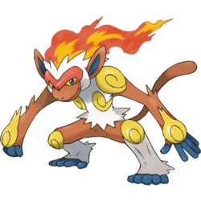

Infernape is a bipedal, monkey-like Pokémon, primarily reddish-brown, with sections of white fur on its chest, head, and lower legs. Several gold markings adorn its body: swirled, circular ones on its knees and shoulders; flame-shaped ones on the backs of its hands; and a stripe around its back that forms two swirls on its chest. Infernape is a powerful Fire-and Fighting-type Pokémon known for its incredible speed, strength, and agility. This Pokémon practices a unique kind of martial art that involves all of its limbs, as it shrouds itself in flame and uses fiery punches and kicks, comparable to dancing. A fun fact about Infernape is that his head crown of fire burns constantly and never goes out, even while its sleeping.